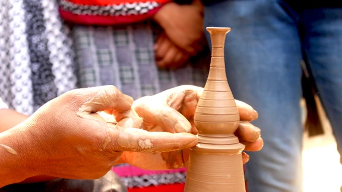

Roam India:"Unveiling Hidden Gems"Roam India:"Unveiling Hidden Gems"
Roam India:"Unveiling Hidden Gems"Roam India:"Unveiling Hidden Gems"
India is a country where culture resonates, tradition speaks, beauty entices, and variety fascinates. India's religious, linguistic, and cultural diversity is unsurpassed. India is known for its rich heritage, many ethnicities, and enormous landscapes.💎
In the words of Mark Twain, “India is the cradle of the human race, the birthplace of human speech, the mother of history, the grandmother of legend and the great-grandmother of tradition.”

India is home to numerous heritage sites that showcase its cultural, historical, and architectural significance.🛕⛩️
 Click here to explore
Click here to explore.png)
Wildlife tourism is an element of many nations' travel industry centered around observation and interaction with local animal and plant life in their natural habitats. While it can include eco- and animal-friendly tourism, safari hunting and similar high-intervention activities also fall under the umbrella of wildlife tourism.
Click here to exploreA handicraft, sometimes more precisely expressed as artisanal handicraft or handmade, is any of a wide variety of types of work where useful and decorative objects are made completely by one's hand or by using only simple, non-automated related tools like scissors, carving implements, or hooks.

Click here to explore